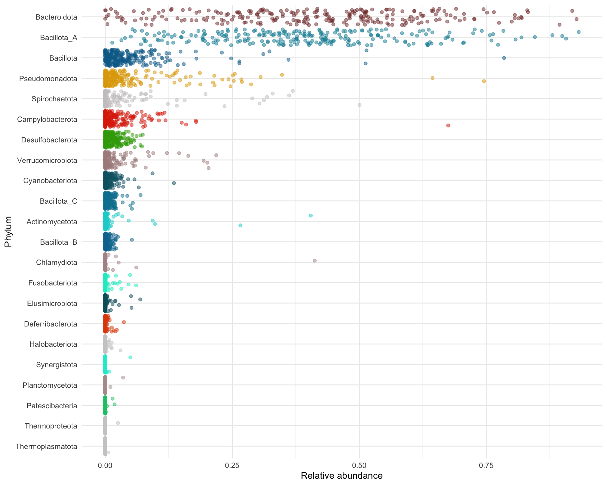
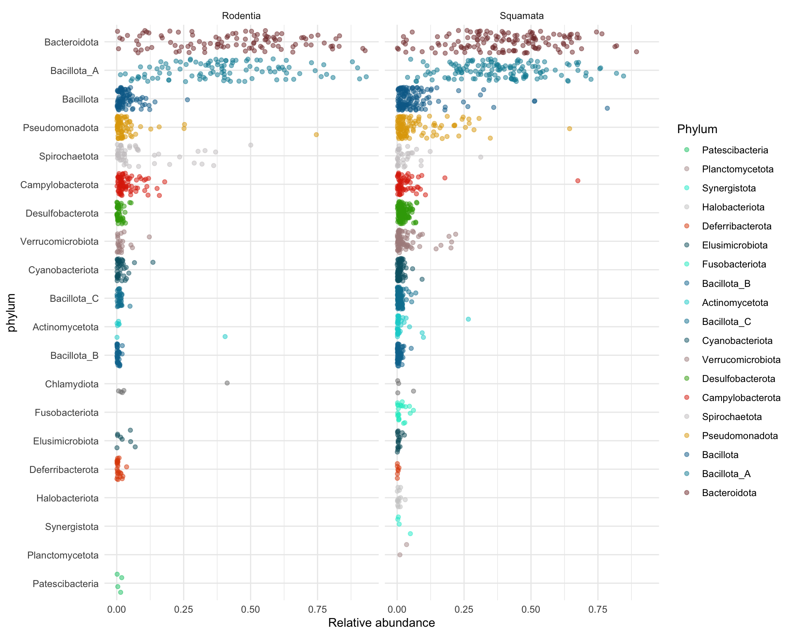
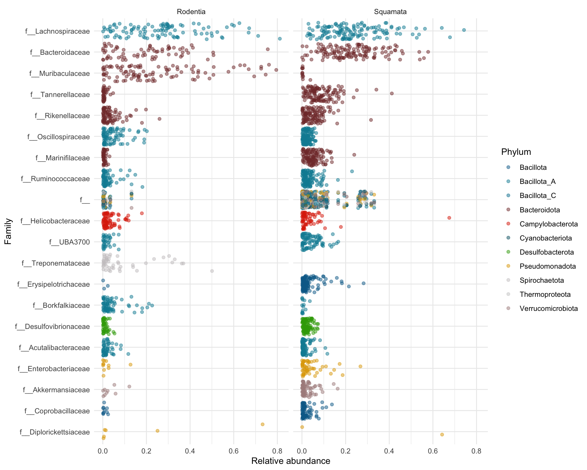

Chapter 5 Community composition
5.1 Filter data
Filter samples with high host data
genome_counts_filt <- genome_counts %>%
select(one_of(c("genome",sample_metadata$sample)))%>%
filter(rowSums(. != 0, na.rm = TRUE) > 0) %>%
select_if(~!all(. == 0))
genome_counts <- genome_counts_filt
genome_metadata <- genome_metadata %>%
semi_join(., genome_counts_filt, by = "genome") %>%
arrange(match(genome,genome_counts_filt$genome))
genome_tree <- keep.tip(genome_tree, tip=genome_metadata$genome) # keep only MAG tips
#load("data/genome_gifts.Rdata")5.2 Taxonomy overview
5.2.1 Stacked barplot
genome_counts_filt %>%
mutate_at(vars(-genome),~./sum(.)) %>% #apply TSS normalisation
pivot_longer(-genome, names_to = "sample", values_to = "count") %>% #reduce to minimum number of columns
left_join(., genome_metadata, by = join_by(genome == genome)) %>% #append genome metadata
left_join(., sample_metadata, by = join_by(sample == sample)) %>% #append sample metadata
filter(count > 0) %>% #filter 0 counts
ggplot(., aes(x=sample,y=count, fill=phylum, group=phylum)) + #grouping enables keeping the same sorting of taxonomic units
geom_bar(stat="identity", colour="white", linewidth=0.1) + #plot stacked bars with white borders
scale_fill_manual(values=phylum_colors) +
facet_nested(. ~ host_order.x+host_species.x, scales="free") + #facet
guides(fill = guide_legend(ncol = 1)) +
theme(
axis.title.x = element_blank(),
panel.background = element_blank(),
panel.border = element_blank(),
panel.grid.major = element_blank(),
panel.grid.minor = element_blank(),
strip.background = element_rect(fill = "lightgrey"),
strip.text = element_text(size = 12, lineheight = 0.6),
strip.placement = "outside",
axis.text.x = element_blank(), axis.ticks.x = element_blank(),
axis.line = element_line(linewidth = 0.5, linetype = "solid", colour = "black")) +
labs(fill="Phylum",y = "Relative abundance",x="Samples")Number of bacteria phyla
[1] 19Bacteria phyla in squamates
[1] 18Bacterial phyla in rodents
[1] 16Number of Archaeal phyla
[1] 3Archaea phyla in squamates
[1] 3Archaea phyla in rodents
character(0)5.2.2 Genus and species annotation
Number of MAGs without species-level annotation
[1] 4056| phylum | count_nospecies | count_total | percentage |
|---|---|---|---|
| Actinomycetota | 23 | 24 | 95.83333 |
| Bacillota | 241 | 276 | 87.31884 |
| Bacillota_A | 2331 | 2451 | 95.10404 |
| Bacillota_B | 26 | 26 | 100.00000 |
| Bacillota_C | 21 | 25 | 84.00000 |
| Bacteroidota | 998 | 1241 | 80.41902 |
| Campylobacterota | 26 | 37 | 70.27027 |
| Chlamydiota | 5 | 6 | 83.33333 |
| Cyanobacteriota | 94 | 98 | 95.91837 |
| Deferribacterota | 6 | 7 | 85.71429 |
| Desulfobacterota | 74 | 75 | 98.66667 |
| Elusimicrobiota | 8 | 9 | 88.88889 |
| Halobacteriota | 6 | 6 | 100.00000 |
| Patescibacteria | 4 | 4 | 100.00000 |
| Planctomycetota | 1 | 1 | 100.00000 |
| Pseudomonadota | 149 | 200 | 74.50000 |
| Spirochaetota | 16 | 21 | 76.19048 |
| Thermoplasmatota | 2 | 2 | 100.00000 |
| Thermoproteota | 1 | 1 | 100.00000 |
| Verrucomicrobiota | 24 | 31 | 77.41935 |
Percentage of MAGs without species-level annotation
[1] 89.24092Number of MAGs without genera-level annotation
4935.2.3 Phylum relative abundances
phylum_summary <- genome_counts_filt %>%
mutate_at(vars(-genome),~./sum(.)) %>% #apply TSS nornalisation
pivot_longer(-genome, names_to = "sample", values_to = "count") %>%
left_join(sample_metadata, by = join_by(sample == sample)) %>%
left_join(genome_metadata, by = join_by(genome == genome)) %>%
group_by(sample,phylum,region, host_order.x) %>%
summarise(relabun=sum(count))phylum_arrange <- phylum_summary %>%
group_by(phylum) %>%
summarise(mean=mean(relabun)) %>%
arrange(-mean) %>%
select(phylum) %>%
pull()
phylum_summary %>%
filter(phylum %in% phylum_arrange) %>%
mutate(phylum=factor(phylum,levels=rev(phylum_arrange))) %>%
ggplot(aes(x=relabun, y=phylum, group=phylum, color=phylum)) +
scale_color_manual(values=phylum_colors[rev(phylum_arrange)]) +
geom_jitter(alpha=0.5) +
theme_minimal() +
theme(legend.position="none") +
labs(y="Phylum",x="Relative abundance")
5.2.3.1 Origin: squamate vs rodent
phylum_summary %>%
group_by(phylum) %>%
summarise(total_mean=mean(relabun*100, na.rm=T),
total_sd=sd(relabun*100, na.rm=T),
squamate_mean=mean(relabun[host_order.x=="Squamate"]*100, na.rm=T),
squamate_sd=sd(relabun[host_order.x=="Squamate"]*100, na.rm=T),
rodent_mean=mean(relabun[host_order.x=="Rodentia"]*100, na.rm=T),
rodent_sd=sd(relabun[host_order.x=="Rodentia"]*100, na.rm=T)) %>%
mutate(total=str_c(round(total_mean,3),"±",round(total_sd,3)),
squamate=str_c(round(squamate_mean,3),"±",round(squamate_sd,3)),
rodent=str_c(round(rodent_mean,3),"±",round(rodent_sd,3))) %>%
arrange(-total_mean) %>%
dplyr::select(phylum,total,squamate,rodent)# A tibble: 22 × 4
phylum total squamate rodent
<chr> <chr> <chr> <chr>
1 Bacteroidota 41.128±21.059 <NA> 43.173±23.36
2 Bacillota_A 39.244±19.005 <NA> 40.173±21.599
3 Bacillota 5.082±8.455 <NA> 3.117±3.911
4 Pseudomonadota 4.585±8.917 <NA> 2.834±8.243
5 Spirochaetota 2.309±6.869 <NA> 4.271±9.532
6 Campylobacterota 2.291±5.316 <NA> 2.948±3.779
7 Desulfobacterota 1.318±1.648 <NA> 0.526±0.996
8 Verrucomicrobiota 1.284±3.329 <NA> 0.426±1.483
9 Cyanobacteriota 0.641±1.403 <NA> 0.672±1.691
10 Bacillota_C 0.641±0.967 <NA> 0.36±0.726
# ℹ 12 more rowsphylum_arrange <- phylum_summary %>%
group_by(phylum) %>%
summarise(mean=sum(relabun)) %>%
arrange(-mean) %>%
select(phylum) %>%
pull()
phylum_summary %>%
left_join(genome_metadata %>% select(phylum,phylum) %>% unique(),by=join_by(phylum==phylum)) %>%
# left_join(sample_metadata,by=join_by(sample==sample)) %>%
filter(phylum %in% phylum_arrange[1:20]) %>%
mutate(phylum=factor(phylum,levels=rev(phylum_arrange[1:20]))) %>%
filter(relabun > 0) %>%
ggplot(aes(x=relabun, y=phylum, group=phylum, color=phylum)) +
scale_color_manual(values=phylum_colors[-8]) +
geom_jitter(alpha=0.5) +
facet_grid(.~host_order.x)+
theme_minimal() +
labs(y="phylum", x="Relative abundance", color="Phylum")
5.3 Taxonomy boxplot
5.3.1 Family
family_summary <- genome_counts_filt %>%
mutate_at(vars(-genome),~./sum(.)) %>% #apply TSS normalisation
pivot_longer(-genome, names_to = "sample", values_to = "count") %>% #reduce to minimum number of columns
left_join(sample_metadata, by = join_by(sample == sample)) %>% #append sample metadata
left_join(., genome_metadata, by = join_by(genome == genome)) %>% #append genome metadata
group_by(sample, family, host_order.x) %>%
summarise(relabun=sum(count))5.3.1.1 Family: squamate vs rodent
family_summary %>%
group_by(family) %>%
summarise(total_mean=mean(relabun*100, na.rm=T),
total_sd=sd(relabun*100, na.rm=T),
squamate_mean=mean(relabun[host_order.x=="Squamata"]*100, na.rm=T),
squamate_sd=sd(relabun[host_order.x=="Squamata"]*100, na.rm=T),
rodent_mean=mean(relabun[host_order.x=="Rodentia"]*100, na.rm=T),
rodent_sd=sd(relabun[host_order.x=="Rodentia"]*100, na.rm=T)) %>%
mutate(Total=str_c(round(total_mean,2),"±",round(total_sd,2)),
squamate=str_c(round(squamate_mean,2),"±",round(squamate_sd,2)),
rodent=str_c(round(rodent_mean,2),"±",round(rodent_sd,2))) %>%
arrange(-total_mean) %>%
dplyr::select(family,Total,squamate,rodent) %>%
paged_table()family_arrange <- family_summary %>%
group_by(family) %>%
summarise(mean=sum(relabun)) %>%
arrange(-mean) %>%
select(family) %>%
pull()
family_summary %>%
left_join(genome_metadata %>% select(family,phylum) %>% unique(),by=join_by(family==family)) %>%
filter(family %in% family_arrange[1:20]) %>%
mutate(family=factor(family,levels=rev(family_arrange[1:20]))) %>%
filter(relabun > 0) %>%
ggplot(aes(x=relabun, y=family, group=family, color=phylum)) +
scale_color_manual(values=phylum_colors[-8]) +
geom_jitter(alpha=0.5) +
facet_grid(.~host_order.x)+
theme_minimal() +
labs(y="Family", x="Relative abundance", color="Phylum")
5.3.2 Genus
genus_summary <- genome_counts_filt %>%
mutate_at(vars(-genome),~./sum(.)) %>% #apply TSS nornalisation
pivot_longer(-genome, names_to = "sample", values_to = "count") %>% #reduce to minimum number of columns
left_join(sample_metadata, by = join_by(sample == sample)) %>% #append sample metadata
left_join(genome_metadata, by = join_by(genome == genome)) %>% #append genome metadata
group_by(sample, phylum, genus, host_order.x) %>%
summarise(relabun=sum(count)) %>%
filter(genus != "g__") %>%
mutate(genus= sub("^g__", "", genus))5.3.3 origin and diet
genus_summary %>%
group_by(genus) %>%
summarise(total_mean=mean(relabun*100, na.rm=T),
total_sd=sd(relabun*100, na.rm=T),
squamate_mean=mean(relabun[host_order.x=="Squamata"]*100, na.rm=T),
squamate_sd=sd(relabun[host_order.x=="Squamata"]*100, na.rm=T),
rodent_mean=mean(relabun[host_order.x=="Rodentia"]*100, na.rm=T),
rodent_sd=sd(relabun[host_order.x=="Rodentia"]*100, na.rm=T)
) %>%
mutate(Total=str_c(round(total_mean,2),"±",round(total_sd,2)),
squamate=str_c(round(squamate_mean,2),"±",round(squamate_sd,2)),
rodent=str_c(round(rodent_mean,2),"±",round(rodent_sd,2))
) %>%
arrange(-total_mean) %>%
dplyr::select(genus,Total,squamate,rodent) %>%
paged_table()genus_arrange <- genus_summary %>%
group_by(genus) %>%
summarise(mean=sum(relabun)) %>%
filter(genus != "g__")%>%
arrange(-mean) %>%
select(genus) %>%
mutate(genus= sub("^g__", "", genus)) %>%
pull()
genus_summary_sort <- genus_summary %>%
group_by(genus) %>%
summarise(mean=mean(relabun, na.rm=T),sd=sd(relabun, na.rm=T)) %>%
arrange(-mean)
genus_summary %>%
mutate(genus=factor(genus, levels=rev(genus_summary_sort %>% pull(genus)))) %>%
filter(relabun > 0) %>%
ggplot(aes(x=relabun, y=genus, group=genus, color=phylum)) +
scale_color_manual(values=phylum_colors) +
geom_jitter(alpha=0.5) +
facet_grid(.~host_order.x)+
theme_minimal() +
theme(axis.text.y = element_text(size=6))+
labs(y="Family", x="Relative abundance", color="Phylum")